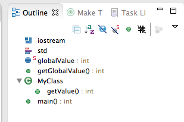
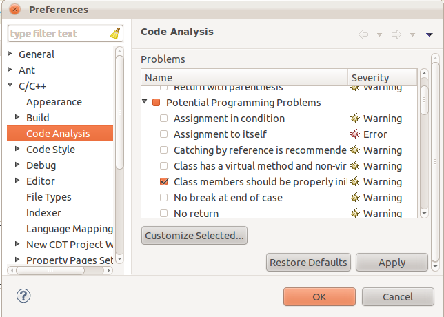
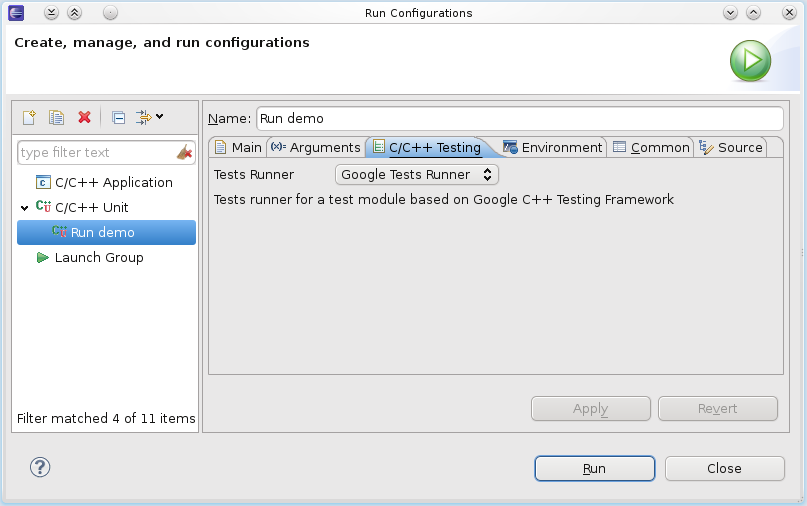
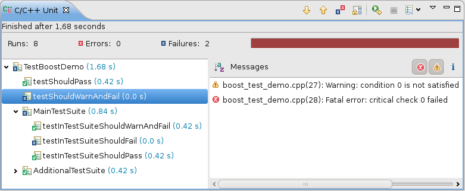

This is not your
father's CDT
But it could be yours...
Marc Khouzam (Ericsson) and Doug Schaefer (QNX/BlackBerry)
Agenda
- Introductions
- Editor
- Parser and Indexer
- Code Analysis
- Refactoring
- Scanner Discovery
- Project and Build
- Debug
- Unit Testing
- Qt
- Future Plans
Introductions
What is CDT?
- C/C++ Development Tooling (CDT)
- Tools for building applications in C/C++ using Eclipse
- Platform used to create C/C++ IDEs
- The Eclipse C/C++ IDE Package
- A community of passionate tools developers
CDT - The Committers
- Andrew Gvozdev
- Anton Leherbauer
- Chris Recoskie
- Doug Schaefer
- Elena Laskavaia
- John Cortell
- Jeff Johnston
- Mikhail Khodjaiants
- Marc Khouzam
- Marc-Andre Laperle
- Markus Schorn
- Patrick Chuong
- Pawel Piech
- Randy Rohrbach
- Sergey Prigogin
- Teodor Madan
- Vivian Kong
- William Swanson
- Thomas Corbat
Who are we?
- Traditional IDE Vendors
- Internal Tooling Support Teams
- University Research Teams and Students
- Individuals out of the blue
Related Eclipse Projects and Working Groups
- Mylyn Bridge
- Linux Tools Project
- Parallel Tools Project
- Automotive Working Group
- M2M?
Who uses the CDT?
Eclipse C/C++ IDE Downloads
- Helios CDT 7.0.1 - 625,162 downlaods
- Indigo CDT 8.0.1 - 812,430 downloads
- Juno CDT 8.1.1?

What's in the CDT?
Editor
- Content Assist
- Formatting
- Block Selection
Outline View
Syntax and Semantic Highlighting

Hover Help
Parser and Indexer
- Full C and C++ parser producing AST
- C++ parser progressing on C++11 support
- Indexer captures symbols, definitions and references
- Index used to spead up parsing a la pch
- Available as API for advanced Tooling.
Code Analysis - Codan
Codan
- Framework to integrate different static analysis tools
- Out-of-the-box static analysis rules and checkers
Codan Customizations
-

- Ability to enable or disable existing rules
- Ability to modify properties of existing rules
- Ability to modify severity of rules
Codan Triggers
- Run upon user request
- Run when project is built
- Run as you type!
Codan Reporting
- Entries in Problems view
- Problem markers in Editor
- Quick Fix available!

Refactoring
- Rename, of course
- Extract Constant
- Extract Local Varaible
- Extract Function
- Toggle Function Definition
- Hide Method
- Implement Method
- Generate Getters and Setters
Discovering Build Environment
- Required for parser to find header files
- Include Paths
- Macro Definitions
- Other advanced build options that impact parsing
- Compiler built-ins
- Most popular: scanning build output
- Extensible mechanism to plug in other methods
Project and Build
- New project wizard
- managed build versus standard
- extending managed build with new toolchains
- standard build integrations
- Makefile project
- Built-in Toolchain support: gcc, msvc, clang
Debug
Project-less Debugging
Want to use Eclipse just to debug?

Pretty-Printing of Data Structures

Reverse Debugging
- Step or Resume forwards AND backwards
- Go back in time, change data and re-write history
- Use breakpoints to enable/disable recording
Reverse Debugging

Multi-Process Debugging
Enhanced Expressions and Groups
Glob-pattern matching with '=' prefix
=var*=myArray[20-30]=$e?xSorted matches
=* or *=$* or $*Grouping using ';' separator
myVar;=myArray[20,24]myVar;$eaxEnhanced Expressions and Groups

OS Resources view
Sometimes examining OS Resources can help solve bugs.

- All Processes
- All Threads
- Semaphores
- Sockets
- Kernel Modules
- File Descriptors
- Message queues
- Memory Segments
Multicore Visualizer

- Monitor entire system at a glance
- Control program execution from Visualizer
Multicore Visualizer CPU Load Meters

- Optionally monitor your target
Multicore Visualizer Filtering

- Focus on interesting parts
- Allow for more information to be displayed
Dynamic-Printf

- No re-compiling
- No re-deploying
- Debugger can disconnect
Step Into Selection
void compute(int a, float b) {
subtract(multiply(add(a, b), 3));
} How many operations to step into subtract()?
Step-into:
int add(int arg1, int arg2) {
return arg1 + arg2;
} Return and Step-into again:
int multiply(int arg1, int arg2) {
return arg1 * arg2;
} Return and Step-into yet again to finally get to:
int subtract(int arg1, int arg2) {
return arg1 - arg2;
} Five stepping operations!
Step Into Selection
void compute(int a, float b) {
subtract(multiply(add(a, b), 3));
} Select the "subtract" method call in the Editor
Choose the Step-Into-Selection operation:
int subtract(int arg1, int arg2) {
return arg1 - arg2;
} All other method calls are stepped-over automatically
Just one stepping operation!
More Debug?
C/C++ Unit Testing
Support for different testing frameworks directly in CDT
C/C++ Unit Testing
- Compile tests into executable binary 
- Launch in Run or Debug mode
C/C++ Unit Testing
- Hierarchical results browsing
- Error message display
- Source Lookup from error
- Result count and timing
- Error filtering by severity
- Re-run selected tests
Qt Support
- qmake build integration
- Slots and Signals
- "Syntax" highlighting
- finding slots and signals in connect statements
Future Plans
- Multicore Visualizer
- Memory Usage Monitoring
- Automatic display of important information
- Global Breakpoints
- Per-target Breakpoints
- Grouping of Debug view elements
- Improve Qt support to first class
- Advanced Makefile projects for cmake, qmake
- LLVM for code analysis